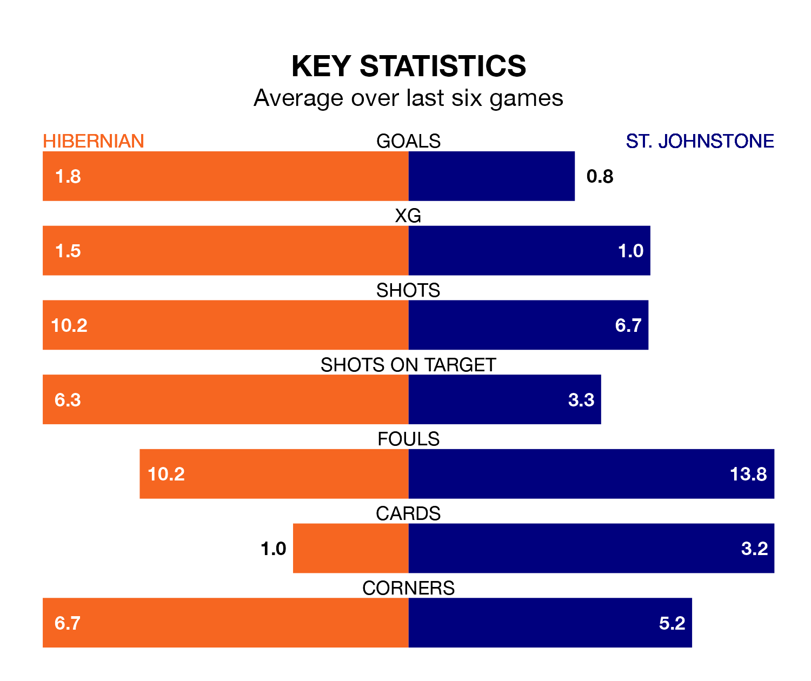

Hibernian are heavy favourites to keep all three points at home in Saturday's kick-off against St. Johnstone.
Hibs, who sit seventh in the Premiership with 31 games played, are priced at 1.5 to seal victory at the Easter Road Stadium.
Sitting three places and 10 points behind them in the table, St. Johnstone are 5.8 to win with *Betting Company*, while the draw is at 4.0.
With 22 goals in 31 games so far this season, St. Johnstone are the league's second-lowest scorers with 0.7 goals per game. And they are conceding more than average, letting in 43 goals at a rate of 1.4 per game.
Hibernian, meanwhile, are above average scorers, with 1.4 goals per game, compared to a league average of 1.3. They have conceded 1.5 goals per game.
In the last 10 years, Hibernian and St. Johnstone have played each other on 23 occasions. They won eight each, and they drew seven times.
On average, Hibs scored 1.2 goals and the Saints 1.0 in those matches.
Their last meeting was on December 16, when St. Johnstone won 1-0 at home.
Hibs are in reasonable form in the Premiership, with three wins and two draws from their last six games.
With a win and a draw over that period, the Saints' form is much worse – they have taken four points from 18, compared to the hosts' 11.
Hibernian's last match was on Saturday, a 3-1 loss against Rangers, with Myziane Maolida getting the goal for Hibs.
St. Johnstone lost 2-1 against Dundee last time out, also on Saturday, with Adama Sidibeh on the scoresheet.
Saturday's match will be refereed by Grant Irvine, who has taken charge of eight Premiership games so far this season, issuing two red cards and booking 21 players. He has awarded three penalties.
The last Hibernian game Irvine refereed was a 2-2 away draw with Kilmarnock on January 27. His last St. Johnstone match was their 2-0 loss away at St. Mirren on February 24.
Updated: 16:41 (UTC), 04/04/24